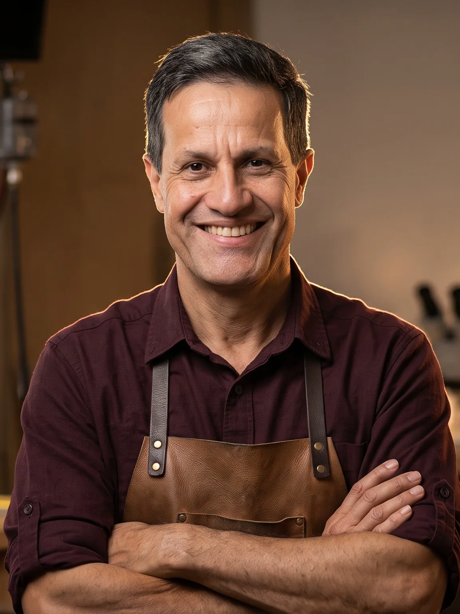
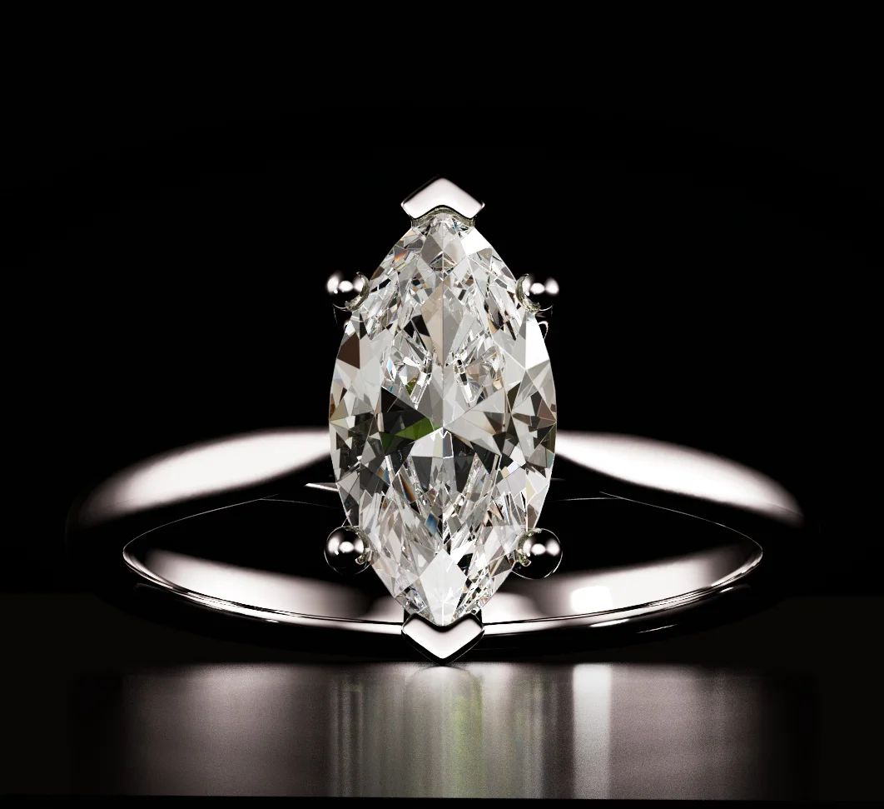
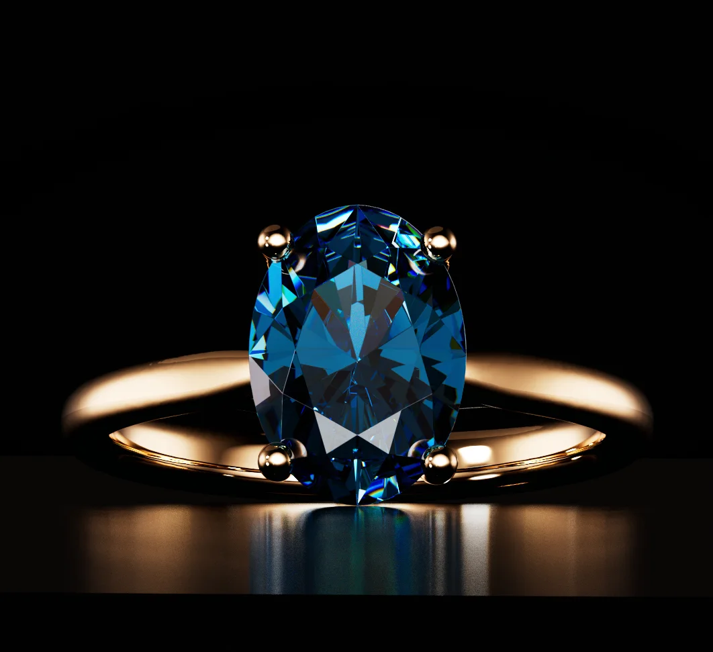
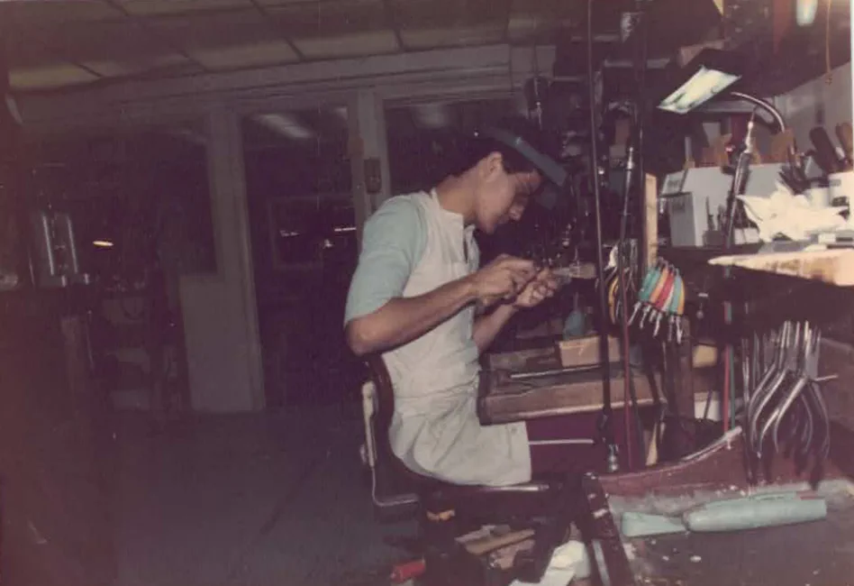
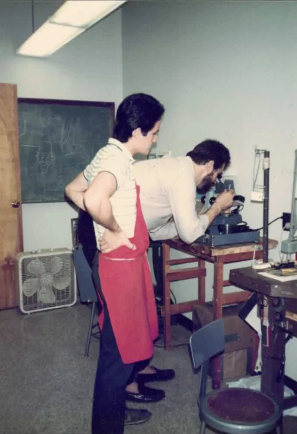
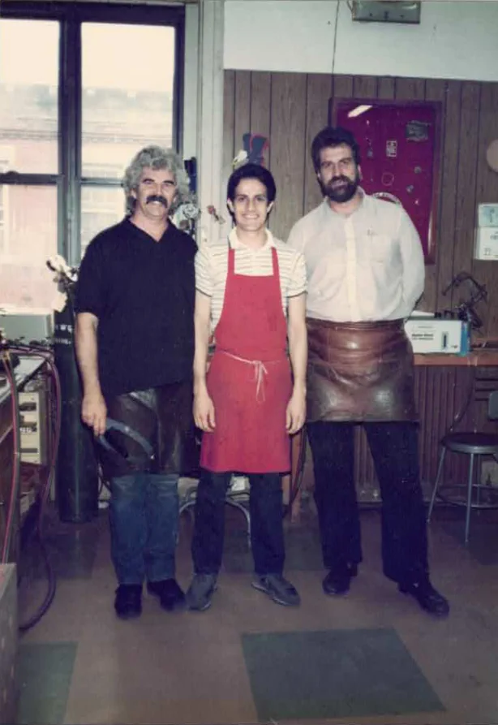
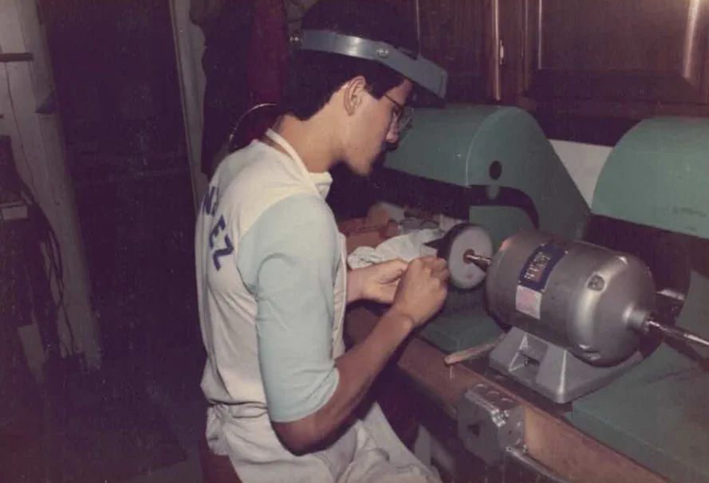
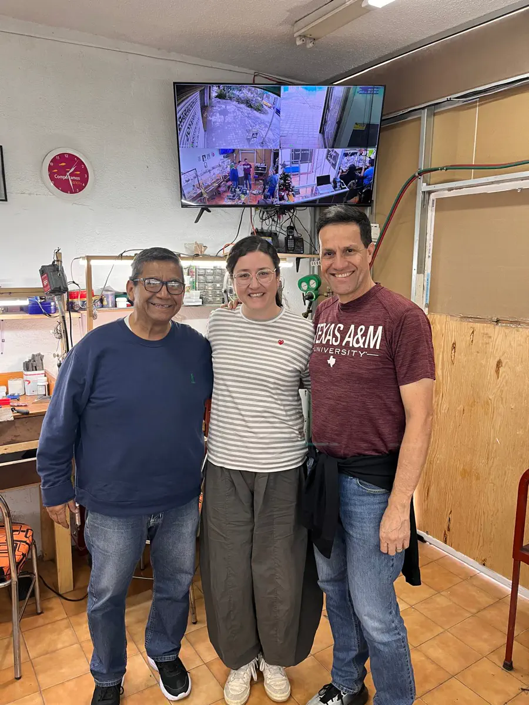

Boston
Jewelry manufacturing and repair at North Bennet Street School.
Complimentary video consultation · Personally with Guillermo
It's about understanding your story—and finding the one that belongs in it.
Before carats, cuts or certificates, there is something more important.
Good. That's where our conversation begins. Tell Guillermo about the person, the moment, and what you want it to mean.

Meet the person behind Indaba
For more than four decades, Guillermo has learned every side of a diamond—from the jeweler's bench and cutting wheel to the quiet moment when someone chooses a ring. He will never guide you toward the most expensive option. He will guide you toward the right one.
“I don't have clients. I make new friends.”
An education earned across continents
Jewelry manufacturing and repair at North Bennet Street School.
Diamond grading and specialized study with GIA.
Rough diamond evaluation, cutting and polishing in South Africa.
Fifteen years helping couples make informed, confident decisions.
Natural or lab-grown. Classic or entirely custom. Arrive with a precise vision or only a feeling. Guillermo begins wherever you are.
Your story, priorities, questions and the details that make this personal.
Clear, honest guidance without jargon or pressure to spend more.
The right certified diamond and setting, designed around you.
Confidently, at your pace, with support through the final moment.
A question people often ask
There is no universal right answer. Only the answer that fits your values, priorities and story. Guillermo will help you understand both—without bias.
Bring a sketch, a saved image, an inherited piece—or nothing but an idea. Together, we shape it into something entirely yours.


Mexico · Boston · New York · Johannesburg · Canada

At the bench, age 19Van Dell Jewellers · Swampscott, Massachusetts · 1985

Learning beside Joe B. CalnanNorth Bennet Street School · Boston · 1986

With the masters who shared their craftSteven Dame · Guillermo González · Joseph B. Calnan

Learning through the workVan Dell Jewellers · Swampscott, Massachusetts · 1985
Born into a family that believed in education, Guillermo learned to sell—and save—at eight years old.
After finding the few jewelers willing to share their craft, he opened a small workshop in Torreón.
Unable to access the knowledge he sought, he travelled with his family to South Africa to learn diamond cutting at its source.
Now he uses everything he has learned to give couples the guidance he once had to cross continents to find.

A purchase with a purpose
Part of Indaba's future profits will help equip a jewelry school in Mexico and create scholarships for people who could not otherwise learn the craft. Every ring helps move that dream forward.
The program and its public impact reporting are currently being developed.
Look beyond the first sparkle
Hearts & Arrows is the hidden geometry created by an exceptional round cut. Guillermo shows how a specialized viewer makes that precision visible.
Questions are welcome
That is precisely why Guillermo is here. Your first conversation is for understanding—not deciding.
You meet directly with Guillermo by video. He listens to your story, priorities and questions, then explains the clearest next steps. The consultation is complimentary and without pressure.
No. Indaba works with both. Guillermo will explain the differences honestly and help you decide which option fits your values and priorities.
Yes. You can bring a sketch, a reference, an existing piece or simply an idea. Guillermo can guide the diamond selection and the complete custom design process.
Yes. Certification and the relevant characteristics of your diamond will be explained clearly before you make a decision.
Yes. Consultations are available in English or Spanish for clients across Canada and the United States.
Complimentary · Personal · No pressure
Your first video consultation is directly with Guillermo, in English or Spanish.